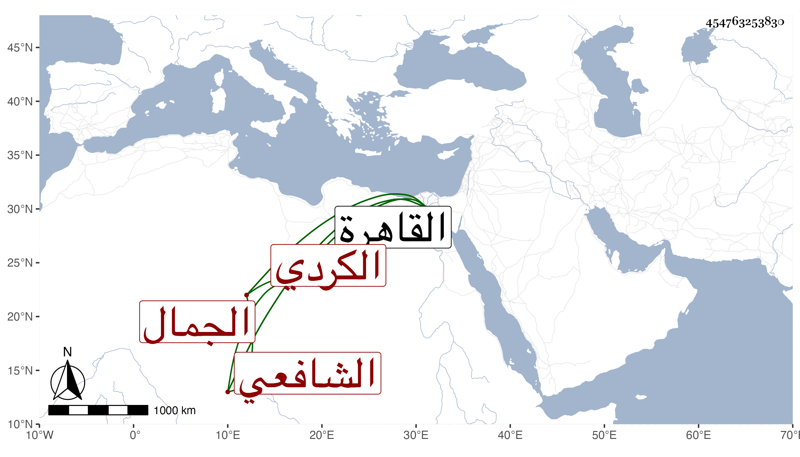

0902Sakhawi.DawLamic.ITO20230111-ara1.EIS1600.454763253830
Biography ID: 454763253830
151
عبد الله بن عيسى بن عبد الله الجمال الكردي نزيل القاهرة الشافعي قدم القاهرة فلازم ابن أسد وجعفرا وتلميذهما الجلال المرجوشي في القراءات وبرع فيها ، وحج وتلا بالعشر أفرادا ثم جمعا على عمر النجار وكذا أخذ عن الشهاب القباقبي وأقرأ وكان حاد الخلق . مات سنة ثلاث وثمانين وقد جاز الأربعين .
